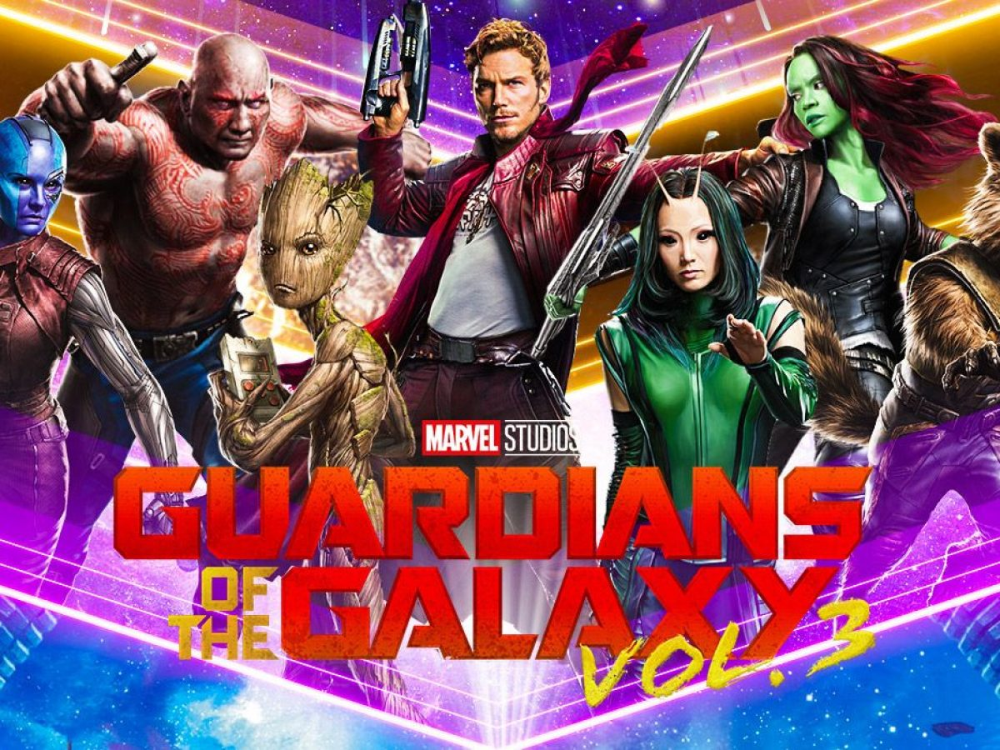
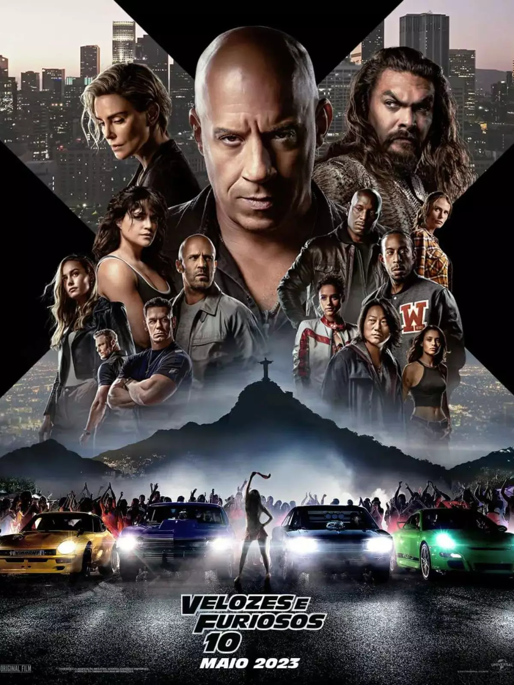
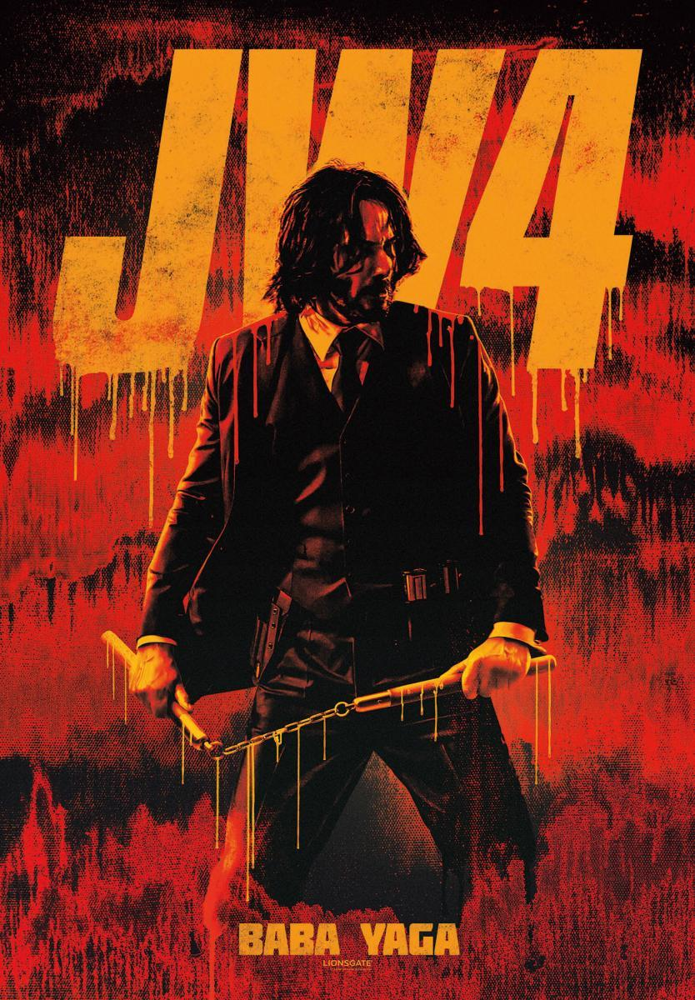

Os 5 Filmes mais Esperados nos Meses de 2023
1-GUARDIÕES DA GALÁXIA VOL. 3

Os Guardiães da Galáxia Vol 3 será lançado em 5 de Maio de 2023.
Genêro: AÇÃO / AVENTURA / SUPER-HERÓIS.
2-Velozes e Furiosos 10

Velozes e Furiosos 10 será lançado em 19 de Maio de 2023.
Genêro: AÇÃO.
3-Transformers: O Despertar das Feras

Transformers: O Despertar das Feras será lançado em 8 de Junho de 2023.
Genêro: AÇÃO / AVENTURA / FICÇÃO CIENTÍFICA.
4-Super Mário Bros: O Filme
Super Mário Bros: o filme será lançado em 6 de Abril de 2023.
Genêro: AÇÃO / ANIMAÇÃO / AVENTURA.
5-John Wick 4: Baba Yaga

John Wick 4: Baba Yaga será lançado em 23 de Março de 2023.
Genêro: AÇÃO / SUSPENSE.